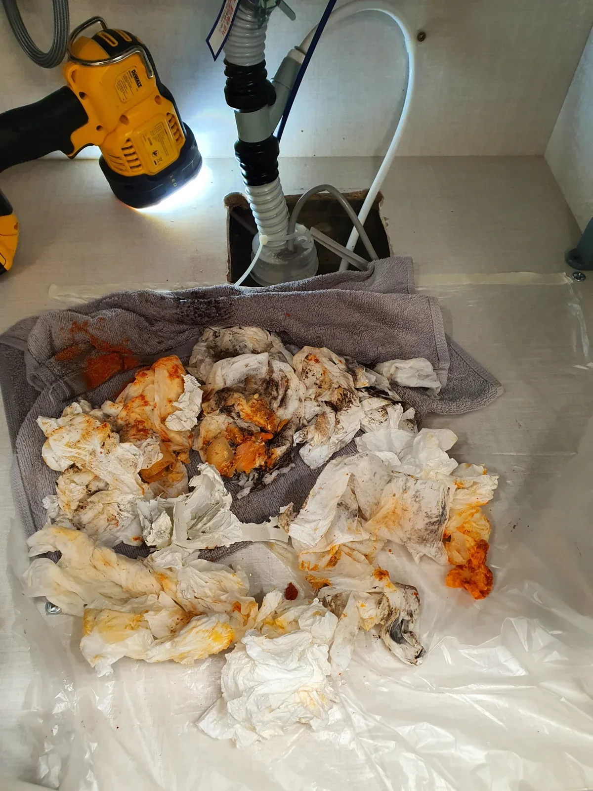
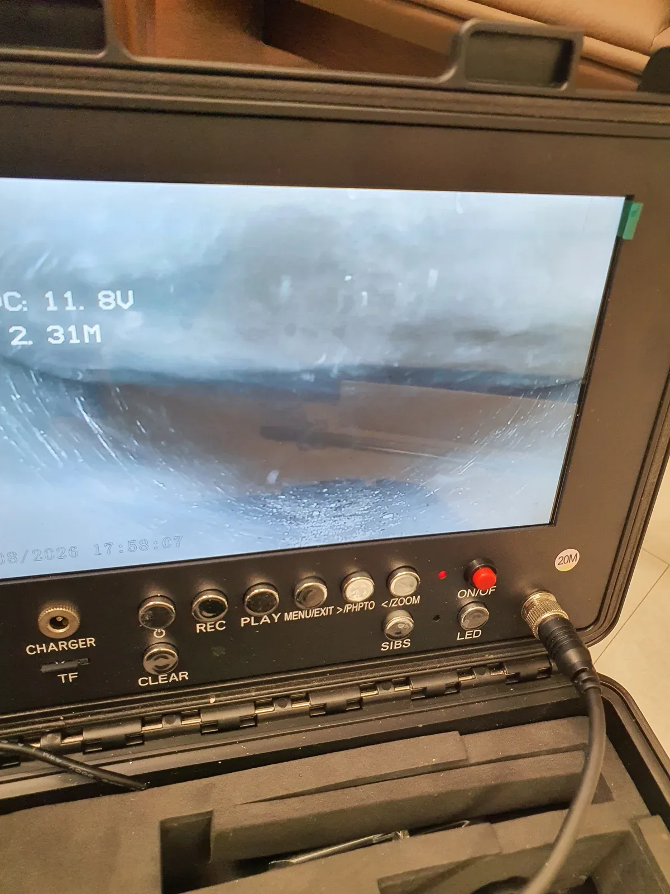

강동구 명일동, 증상과 점검 기준
명일동 하수구업체에 싱크대 연결 배관의 하수구막힘을 문의할 때는 증상과 함께 점검·보양·작업·완료 확인 범위를 살펴보세요. 이번 사례는 신라건축설비의 명일동 기름때 제거 사례를 바탕으로 상담할 항목을 정리합니다.
서울 강동구 명일동에서 배관 안에 기름때가 많이 쌓여 물 빠짐이 원활하지 않았던 하수구막힘 현장입니다. 싱크대에서 사용한 물이 내려가려면 아래쪽 배수관의 통로가 확보되어 있어야 합니다. 이번에는 샤프트 작업을 할 때마다 와이어에 기름때가 묻어 나오는 상태였습니다. 신라건축설비는 하부장과 주변 바닥을 보양하고 배관 작업을 준비했습니다.
뚫는 업체에 문의할 때는 장비 보유 여부만 묻기보다 이번 증상에서 무엇을 먼저 확인하는지 물어보세요. 확인한 위치와 작업 방법이 연결되고, 처리 후에는 어떤 기준으로 배수가 회복됐다고 판단하는지 설명받을 수 있어야 합니다. 현장 사진은 장비가 놓인 모습뿐 아니라 작업 대상과 결과를 함께 보는 자료입니다. 상담 시에는 물이 고이는 위치, 언제부터 불편했는지, 이미 시도한 방법을 알려주시면 좋습니다. 같은 지역에서도 배관 구조가 달라지므로 방문 가능 일정과 필요한 점검 범위를 개별적으로 확인해 주세요.
싱크대가 막혔을 때 물이 조금 내려가기 시작하면 문제가 해결된 것으로 생각하기 쉽습니다. 하지만 이번 명일동 하수구막힘처럼 작업 중 기름때가 계속 묻어 나온다면 남은 부분을 처리하는 과정이 중요합니다. 배관을 작업하는 단계와 물을 흘리면서 배출을 돕는 단계, 마지막 상태를 확인하는 단계를 연결해 진행했습니다.
증상을 구체적으로 전달하세요
싱크대 물이 천천히 내려가는지, 사용 중 차오르는지, 이전에 어떤 조치를 했는지 설명해주세요. 하부 공간과 주변 사진이 있으면 장비 접근과 보양 준비를 상담하는 데 도움이 됩니다.
하부 배관에 샤프트를 넣고 기름때로 막힌 구간을 작업했습니다. 먼저 물이 지나갈 길을 확보하는 것이 목적이었습니다. 작업하면서 와이어를 꺼내 보니 기름때가 많이 묻어 나왔고, 이를 휴지로 닦아내며 작업을 이어갔습니다. 이번 하수구막힘 현장에서 와이어에 붙은 오염은 다음 작업이 더 필요한지 살펴보는 현장 근거가 됐습니다.
한 차례 하수구막힘 작업 후 바로 마무리하지 않고 샤프트 작업을 2~3회 반복했습니다. 반복 과정에서는 배관 내부의 남은 기름때를 처리하고, 도구에 묻어 나온 오염을 닦아냈습니다. 하부장에 보양재를 깔아 놓은 이유도 이처럼 오염이 배관 밖으로 나오는 작업을 진행하기 위해서였습니다. 사진 속 휴지와 보양 상태는 실제 제거 과정과 연결되는 부분입니다.

작업 계획과 추가 비용 설명
이 현장에서는 보양 후 샤프트를 투입하고 반복 작업을 진행했습니다. 출장·점검 비용과 필요한 하수구막힘 처리 범위를 먼저 확인하고, 추가 작업이 생기면 이유와 금액을 설명받으세요. 모든 현장에 동일한 횟수나 작업 방법을 약속하는 것은 아닙니다.
물길을 확보한 뒤에는 싱크대에서 물을 흘려보내면서 샤프트 작업을 추가로 진행했습니다. 떨어져 나온 기름때와 오염이 물 흐름을 따라 배출되도록 이어간 과정입니다. 이번 하수구막힘 작업은 와이어에 묻은 오염을 닦아내는 과정과 배관 안에서 떨어진 오염을 물로 흘려보내는 과정이 함께 이루어졌습니다. 물길 확보 이후에도 작업을 이어간 이유입니다.
배관 안의 기름때를 처리할 때는 눈앞에서 꺼낸 양만으로 전체 상태를 판단하기 어렵습니다. 따라서 추가 작업 후에는 내시경으로 내부를 확인했습니다. 샤프트 작업에 사용한 위치와 배관 안쪽 상태를 함께 살피고, 마지막에는 싱크대에서 물을 내려 실제 배수를 점검했습니다. 내시경 확인은 배관 내부를 보는 과정이고 통수 테스트는 물의 흐름을 보는 과정입니다.

작업 결과와 사용·상담 안내
이번 명일동 사례는 내시경으로 내부를 살피고 물을 흘려 정상 통수를 확인했습니다. 상담에서도 결과 확인 방법과 사용 후 관리 안내를 함께 물어보세요. 사진과 작업 설명을 같이 확인하면 진행한 내용을 이해하기 쉽습니다.
명일동 하수구막힘은 샤프트 작업을 2~3회 반복하고 물을 흘리며 추가 작업한 뒤 정상 통수를 확인했습니다. 고객님도 개선된 배수 상태에 만족하셨습니다. 작업 전에는 배수가 원활하지 않았고, 작업 중에는 와이어에 기름때가 계속 묻어 나왔습니다. 이 상태를 확인하며 작업을 이어간 것이 이번 현장의 핵심입니다.
지역과 희망 시간을 전달해 방문 가능한 일정을 상담할 수 있습니다. 방문 가능 시간은 현장 위치와 현재 작업 일정을 확인해 안내드립니다.
기름때와 관련된 하수구막힘을 줄이려면 팬이나 그릇에 남은 기름을 먼저 닦아낸 다음 설거지하는 습관이 도움이 됩니다. 음식물 찌꺼기는 거름망에서 따로 수거하고, 남은 기름을 배수구에 한꺼번에 붓지 않도록 해주세요. 배수가 느려진 상태가 반복된다면 일시적으로 물이 빠진다는 이유만으로 계속 사용하기보다 내부 상태를 점검하는 것이 좋습니다. 하수구 뚫는 업체에 상담할 때에는 현재 증상과 점검할 범위를 함께 확인해 주세요. 하수구가 막혔을 때는 물 사용을 줄이고 배수 상태를 먼저 살펴보세요.
최종 조치: 하수구막힘 조치 완료: 샤프트 반복 작업과 물을 흘리며 진행한 추가 세척 후 내시경 점검 및 정상 통수 확인
현장 방문 전 확인하는 비용과 작업 범위
신라건축설비는 현장 증상과 배관 구조를 확인한 뒤 필요한 작업과 예상 비용을 안내합니다. 단순 관통으로 해결되는지, 배관내시경·석션·고압세척 또는 추가 장비가 필요한지는 현장 상태에 따라 달라집니다. 출장비와 야간 작업비, 추가 장비 비용이 발생할 수 있는 경우 작업 전에 먼저 설명하고 동의를 받은 범위에서 진행합니다.
업체를 선택할 때 확인할 사항
무조건적인 ‘0원’ 표현보다 실제 작업 범위, 추가 비용 조건, 사용 장비와 사후 대응 기준을 확인하는 것이 중요합니다. 해결되지 않았을 때의 비용 기준과 작업 후 동일 증상 발생 시 점검 범위를 사전에 문의해두면 불필요한 분쟁을 줄일 수 있습니다.
강동구 하수구막힘 자주 묻는 질문
하수구막힘은 왜 반복되나요?
강동구 명일동 현장처럼 배관 안에 기름때가 많이 쌓여 싱크대 배수가 원활하지 않음 증상은 원인이 현장마다 다를 수 있습니다. 배관 내부 기름 슬러지·생활 오염물·스케일이 충분히 제거되지 않았거나 오수관·공용배관 구간에 문제가 있으면 반복될 수 있습니다. 재발 시 막힌 위치와 배관 상태를 함께 확인합니다.
하수구가 역류하거나 물이 안 내려가면 하수구뚫는업체를 불러야 하나요?
바닥 배수구가 역류하거나 여러 배수구에서 동시에 물이 빠지지 않으면 단순 배수구 막힘보다 깊은 배관이나 공용배관 문제일 수 있습니다. 전문 장비로 원인 구간을 확인하는 것이 좋습니다.
여러 배수구가 동시에 막히면 공용배관이나 오수관 문제인가요?
동시에 여러 곳에서 배수 불량과 역류가 발생하면 메인배관·오수관·공용배관을 의심할 수 있지만 건물 구조마다 다릅니다. 배관내시경과 현장 진단으로 구간을 구분합니다.
하수구뚫는업체는 어떤 장비로 작업하나요?
현장에 따라 샤프트, 석션, 배관내시경, 고압세척 장비 등을 사용합니다. 단순 관통이 필요한지 배관 내부 세척까지 필요한지는 오염 상태와 막힘 원인에 따라 판단합니다.
하수구 고압세척은 언제 필요한가요?
기름 슬러지나 배관 내부 오염이 넓게 쌓여 반복 막힘이 생기는 경우 고압세척이 효과적일 수 있습니다. 모든 하수구막힘에 고압세척을 적용하는 것은 아니며 먼저 배관 상태를 확인합니다.
하수구막힘 비용은 어떻게 정해지나요?
막힌 위치, 배관 길이와 구경, 공용배관 여부, 내시경·샤프트·고압세척 등 장비 투입 범위에 따라 달라집니다. 추가 작업이 필요한 경우 진행 전에 범위와 비용을 안내합니다.
하수구막힘 서울·경기 출동지역
신라건축설비는 강동구 명일동 현장을 포함해 서울 25개 구와 경기도 31개 시·군의 배관 문제를 상담합니다. 현장 거리와 기사 배정 상황에 따라 출동 가능 여부를 먼저 안내드립니다.
서울 전 지역
강남구 · 강동구 · 강북구 · 강서구 · 관악구 · 광진구 · 구로구 · 금천구 · 노원구 · 도봉구 · 동대문구 · 동작구 · 마포구 · 서대문구 · 서초구 · 성동구 · 성북구 · 송파구 · 양천구 · 영등포구 · 용산구 · 은평구 · 종로구 · 중구 · 중랑구
경기도 주요 출동지역
수원시 · 용인시 · 고양시 · 화성시 · 성남시 · 부천시 · 남양주시 · 안산시 · 평택시 · 안양시 · 시흥시 · 파주시 · 김포시 · 의정부시 · 광주시 · 하남시 · 광명시 · 군포시 · 양주시 · 오산시 · 이천시 · 안성시 · 구리시 · 의왕시 · 포천시 · 양평군 · 여주시 · 동두천시 · 과천시 · 가평군 · 연천군